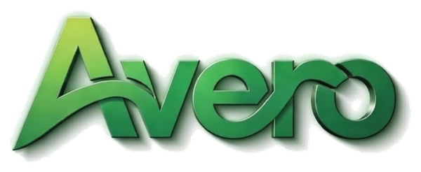
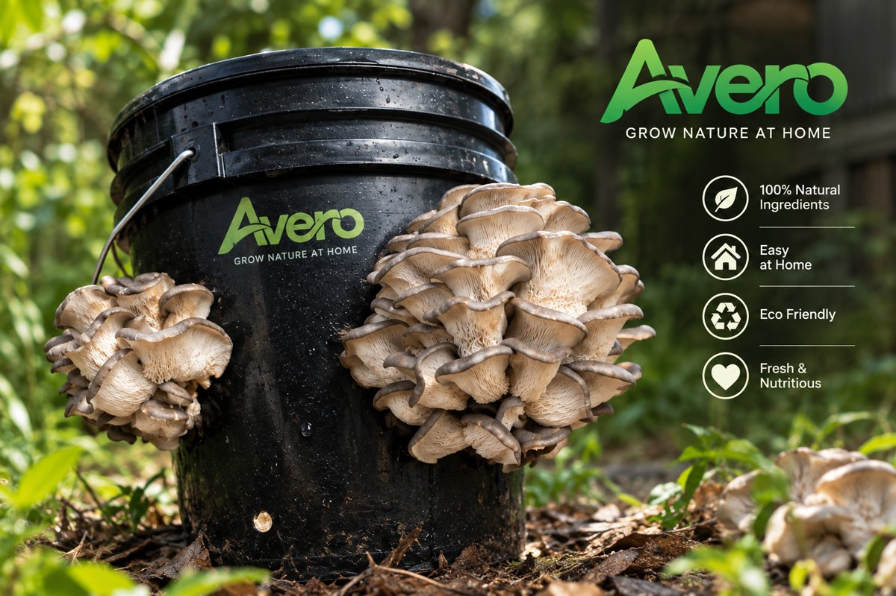

GrowBack exists to turn low-cost spawn into steady household income, without asking a family to find capital, a market, or a middleman first. We supply the input, guarantee the buyer, and let the harvest speak for itself.

To make oyster mushroom cultivation a realistic income source for households across Sri Lanka by removing the two biggest barriers to entry: the cost of spawn, and the uncertainty of who will buy the harvest.
We do this by working through the Agriculture Office to distribute spawn at or near cost, and by standing behind every grower with a fixed buyback price — so the only variable left for a household to manage is the growing itself.
A network of home-based growers supplying a visible, branded supply chain into local shops and supermarkets — where "grown by the community" is a retail story that supermarkets want to tell, and a livelihood that households want to keep.
Over time, we see grow media — bags, buckets, and containers — becoming a small manufacturing and retail line in its own right, funded in part by the deposits and direct sales that already run alongside the program.
Free spawn removes the first obstacle. A refundable deposit — not a purchase — removes the second for households that also need grow media.
Every grower signs an agreement committing their harvest back to the program at a fixed price, which is what makes a consistent retail supply possible in the first place.
Supermarkets and shops get a traceable, community-grown product with a genuine origin story — not a manufactured one — to put behind a CSR campaign.
The program is structured so the Agriculture Office's contribution — cheap spawn — is the single input that unlocks the rest of the chain.
Every part of GrowBack's design maps to something that already exists here — which is the strongest thing a pitch to a government office can say.
DOA's Horticultural Crops Research and Development Institute (HORDI) at Gannoruwa, Peradeniya maintains a dedicated mushroom programme covering spawn, substrate preparation, and disease management — the natural technical partner for spawn quality and grower training.
Sri Lankan studies on mushroom farming (e.g. Thilakaratna & Pathirana's Kuruwita research) specifically recommend subsidised spawn and equipment paired with effective ground-level monitoring of subsidy programmes — precisely what GrowBack's grower tracking is built to provide.
Cargills' Sarubima outgrower programme and Keells' network of nine farmer collection centres show that direct farmer-to-supermarket sourcing is an established, proven channel in Sri Lanka — not a new concept retailers need convincing of.
For the cocopeat and grow-media export plans, the Coconut Development Authority (CDA) sets the process: register as a manufacturer, register as an exporter, and accompany every shipment with a CDA quality certificate. It's a known checklist, not an open question.
GrowBack is a community initiative from Avero Export, a Sri Lankan agri-tech company founded by Elmo Pereira. Avero's core business today — premium coco peat grow bags and blocks, produced and certified in Sri Lanka for local and export markets — is what makes GrowBack possible: the same substrate expertise, quality process, and grower-support systems built for commercial buyers are what free spawn recipients get access to here.
Team, partnership, and program history to be added as GrowBack moves from pitch to pilot.
Premium coco peat grow bags (100×15×12cm, 50/50 coco peat and chips) and 5kg coco peat blocks (70/30 mix), manufactured in Sri Lanka under local sanitary certification.
An extended 6-cycle wash achieving ultra-low EC levels — the same processing standard export buyers require is what goes into the media GrowBack distributes.
End-to-end growing guidance from planting through yield, already built for commercial clients — the foundation for the growing guide in GrowBack's own grower portal.
Batch testing and quality reporting on every production run, with factory visits welcomed — the same standard of accountability GrowBack brings to its grower tracking.